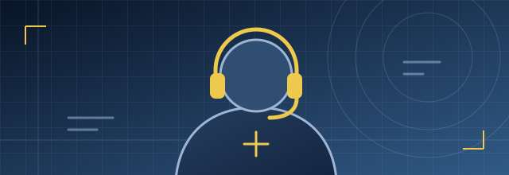
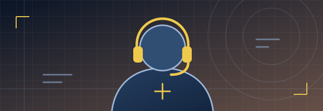
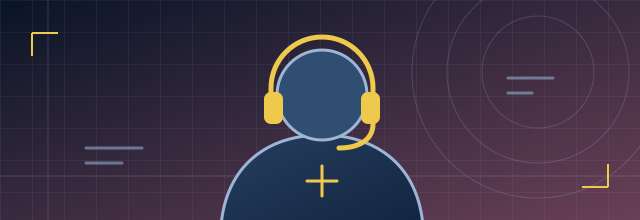
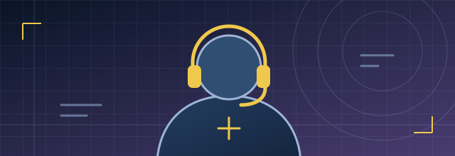

CS2Демонстраційний профіль
Командна гра й розбір раундів
Підготовка виходів, короткі підказки для команди та розбір взаємодії з напарником.
Переглянути приклад вправи →Підбери вправу для самостійної практики за грою й навичкою або знайди ігровий канал у добірці незалежних авторів.
Показано прикладів: 4 із 4.

Підготовка виходів, короткі підказки для команди та розбір взаємодії з напарником.
Переглянути приклад вправи →
Розбір добивань і позиції на лінії. Практика переходів між ділянками карти за доступною інформацією.
Переглянути приклад вправи →
Повторення застосування здібностей у приватній грі та розбір їхнього таймінгу в командних діях.
Переглянути приклад вправи →
Вибір позицій для підтримки напарника, короткі повідомлення в раунді та розбір командного виходу.
Переглянути приклад вправи →Добірка незалежних авторів про CS2 і Dota 2: від трансляцій матчів до спільних переглядів. Вони не є тренерами чи учасниками команди КіберЛьвова.
 Dota 2
Dota 2
Трансляції матчів
Стример і автор ігрового контенту, відомий під ніком Папич. Став популярним завдяки трансляціям Dota 2.
Канал на YouTube CS2
CS2
Змагальні матчі
Стример Counter-Strike. На каналі — матчі, спілкування з глядачами та контент навколо змагальної гри.
Канал на Twitch Dota 2
Dota 2
Матчі й коментарі
Стример Dota 2. Транслює власні матчі та коментує події на кіберспортивній сцені.
Канал на Twitch CS2
CS2
Спільні перегляди матчів
Український стример Михайло Лебіга. Створює розмовний контент і проводить спільні з глядачами перегляди матчів Counter-Strike 2.
Канал на TwitchОбери гру та кількість матчів або доступний час одного заняття.
Якщо знайдеш тренера, почни з розмови про конкретну навичку та формат роботи. Навіть коротке пояснення покаже, чи підходить тобі його підхід.
Назви гру, роль та ситуацію, яка регулярно повторюється. Наприклад: «Під час командного виходу я часто залишаюся надто далеко від напарника».
Уточни, чи буде розбір запису матчу, спільна практика або вправа для самостійного повторення. Запитай, що варто підготувати до зустрічі.
Домовся про одну ознаку, за якою зможеш оцінити зміни. Наприклад, у трьох раундах заздалегідь повідомити напарнику, яку позицію ти контролюєш.